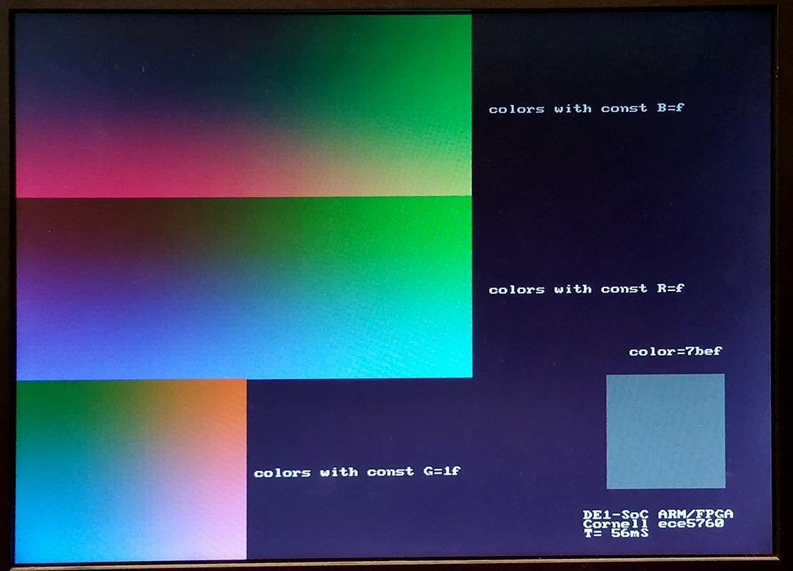
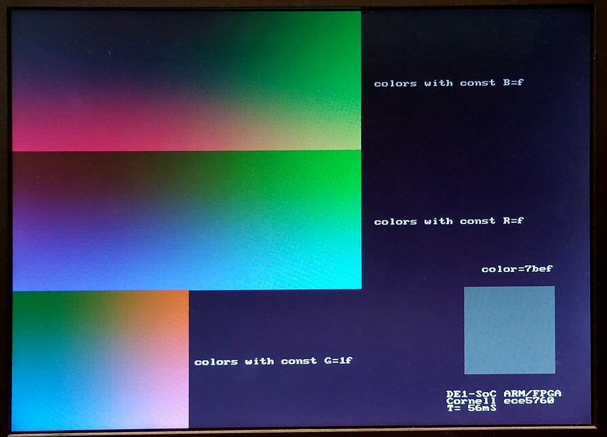

DE1-SoC:
University Computer
Graphics, audio, IPC
Cornell ece5760
University Program DE1-SoC_Computer_15_1
This computer system includes support for ARM, Nios, video, audio, and many other items. I converted some code from bare-metal to Linux to run on the UP-Linux distribution. First test is to get VGA display running and test the writing speed. I did a minor reorganization of the address map file and converted one C example to just run the VGA, and update 10,000 pixels as fast as possible.The update takes 1.8 mSec, so the effective pixel writing rate is about 5.5 million pixels/sec. The example also defines a line-drawing routine, but does NOT check pixel bounds. If you write outside the screen bounds, the program segfaults. The image to the left shows one update frame (at 320x340 resolution)..
 The code was modified to write random rectangles. The write-rate is too fast to see, but the colors are nice.
The code was modified to write random rectangles. The write-rate is too fast to see, but the colors are nice.
(at 320x340 resolution). Colors are 16 bit: top 5 bits red, middle 6 green, lower 5 blue.
--Converting DE1-SoC_Computer_15_1 to 640x480, 8-bit color
 The directions written by Shiva Rajagopal for Qsys 640x480 converstion worked for this system. (system ZIP) The span of the addresses in the virtual-to-real memory map had to be doubled. and, of course, the addressing and colors of pixels had to be modified in the main program. The size of the character buffer was not changed. The color encoding is now 8-bit with top 3 bits red, next 3 green, lower 2 bits blue.
The directions written by Shiva Rajagopal for Qsys 640x480 converstion worked for this system. (system ZIP) The span of the addresses in the virtual-to-real memory map had to be doubled. and, of course, the addressing and colors of pixels had to be modified in the main program. The size of the character buffer was not changed. The color encoding is now 8-bit with top 3 bits red, next 3 green, lower 2 bits blue.
VGA_line(0, 0, 320, 240, 0xe0) ; // red 3-bits
VGA_line(639, 0, 320, 240, 0x1c) ; // green 3-bits
VGA_line(639, 479, 320, 240, 0x03) ; // blue 2-bits
The design was very slow to generate (Qsys) and compile (Quartus). It took around an hour (on my 5 year old machine). Next step is to speed it up. Chopping out the Nios CPUs and some of the support, but leaving the video in/out and audio reduces the generate time to 5 minutes and the compile time to about 22 minutes. (archive). Stripping out the rest of the LED and switch i/o and removing the video-input funciton reduces the compile time to 18 minutes.
A better chopped down system keeps the LEDs, switches, 640x480 video out, and audio. The design is partitioned (Assigments>Design Partitions Window) so that the DE1-SoC computer is in its own partition. Two other partitions are top and the hex display modules. On my new computer (4 core, 32 GB memory, SSD, July 2016), this takes 12 minutes for a full compile. A small change to the hex display partition takes about 8.5 minutes to recompile. A small C code tests the hex display partition. (C code, address header, project ZIP).
-- Mandelbrot set on VGA/HPS , 8-bit color
 This example is a base-line implementation of a mandelbrot solver which displays using the DE1-SoC computer system explained above. It computes a 640x480 approximation with a maximum of 1000 iterations in about 3.4 seconds, using level -O2 compiler optimization. The code computes about 23 million complex iterations/sec (40 cycles/iteration). The colors are approximately logarithmic in number of iterations at that point. Image. The total number of iterations for all points on the screen and total execution time are displayed. Also included is a routine to erase all text on the screen. Use the sof file from the "better chopped down system" above. Converting the code to 4:28 fixed point arithmetic lowers the time to 2.02 seconds, or about 39 million iterations/sec. Detecting circular regions of the slowest areas (in blue) and just setting the count to maximum in those regions lowers the drawing time to 0.85 seconds. Code
This example is a base-line implementation of a mandelbrot solver which displays using the DE1-SoC computer system explained above. It computes a 640x480 approximation with a maximum of 1000 iterations in about 3.4 seconds, using level -O2 compiler optimization. The code computes about 23 million complex iterations/sec (40 cycles/iteration). The colors are approximately logarithmic in number of iterations at that point. Image. The total number of iterations for all points on the screen and total execution time are displayed. Also included is a routine to erase all text on the screen. Use the sof file from the "better chopped down system" above. Converting the code to 4:28 fixed point arithmetic lowers the time to 2.02 seconds, or about 39 million iterations/sec. Detecting circular regions of the slowest areas (in blue) and just setting the count to maximum in those regions lowers the drawing time to 0.85 seconds. Code
-- Conway's game of life on VGA/HPS
, 8-bit color
 The game of life is a 2D, totalistic, cellular automaton which is compute-universal. The HPS program displays using the DE1-SoC computer system explained above.
It computes a 640x480 cell automaton at approximately 14 frames/sec, using level -O2 compiler optimization. This corresponds to about 4.25 million cell updates/sec. The slow step here is writing the pixels to the frame buffer, which is limited by the bus rate to about 5 million/sec. If you modify the code to be smarter about writing pixels, the speed goes as high as 60 frames/sec, or about 18 million cells/sec, but will depend on the specific content of the screen. More cell state changes will slow down execution. Use the sof file from the "better chopped down system" above.
The game of life is a 2D, totalistic, cellular automaton which is compute-universal. The HPS program displays using the DE1-SoC computer system explained above.
It computes a 640x480 cell automaton at approximately 14 frames/sec, using level -O2 compiler optimization. This corresponds to about 4.25 million cell updates/sec. The slow step here is writing the pixels to the frame buffer, which is limited by the bus rate to about 5 million/sec. If you modify the code to be smarter about writing pixels, the speed goes as high as 60 frames/sec, or about 18 million cells/sec, but will depend on the specific content of the screen. More cell state changes will slow down execution. Use the sof file from the "better chopped down system" above.
-- Graphics primitives on VGA/HPS, 8-bit color
A few more 2D drawing primitives were added to draw:
points, lines (general, fast vertical, fast horizontal), filled circles, circles, filled rectangles and rectangle edges.
As above, color is 8-bit, resolution is 640x480. Text is drawn in white only. Also, there is a routine to clear text from the frame buffer. Clearing the image plane is done by writing a large, black, filled rectangle. Use the sof file from the "better chopped down system" above.
Code
-- Color chooser on VGA/HPS, 8-bit color
I wrote a color chooser that lays out a grid of all the possible 8-bit colors in hexidecimal order , then prompts you for the location and index of up to four different colors for comparison in a larger patch. You get the index by adding the column and row numbers for a given color. Ordering is [red 7:5, green 4:2, blue 1:0] . You set the location of the larger patch as an integer 0-3. Code.
Reordering the color patches to make four 64-patch red-green planes, with increading blue content makes a nicer display. The hex equivalent is displayed on each patch. Code.
-- Video input from NTSC to VGA, 8-bit color
The board supports NTSC/PAL input through a Video Input subsystem in Qsys. A camera is attached to the yellow composite video jack. Several modifications need to be done to the Qsys layout and top-level module to make this work at 640x480 resolution. In the Video Input Subsystem:
- Video_in_rgb_resampler module changed to output 8-bit rgb
- Video_in_clipper module set to 8-bit, 1-plane
- Video_in_scaler module set to 640x480 with width scale 0.5, height scale 2.0, 8-bits, 1-plane
- Video_in_DMA module set to 640x480, 8-bits, 1-plane
In the top-level module the video input signals need to be defined as given in the reference design, but the TD_RESET_N signal is not correctly generated by the supplied IP, so a line was added to the top-level assign TD_RESET_N = SW[1]; . The switch may need to be cycled at power-up to enable the system. Turning off the switch freezes the video capture. Also, the system would not start unless the edge-detect option was transiently turned on by a HPS program. The HPS program also reads and displays the 8-bit color of the pixel at video input location 160x120, the middle of the input image. I do not know yet why there are two copies of the camera image displayed.
(top-level, project ZIP).
Converting video to SDRAM -- 640x480 8-bit and 16-bit color
-- Video input from NTSC to on-chip-memory, then to SDRAM VGA using HPS, in 8-bit color
The Qsys layout can be modified so that video input goes to on-chip, dual-port SRAM, while the VGA display is refreshed from SDRAM. It is then possible to use the HPS to copy pixels from the video-in SRAM to the display buffer SDRAM, or just use the pixels for computation on the HPS. Changes to the Qsys layout:
- The VGA subsystem
- Inside the VGA subsystem, the vga_pixel_dma module has the address modifed to 0x00000000, the base of SDRAM.
- Output from the dma controller in the top-level Qsys is disconnected from on-chip-sram
- The AXI-bus master remains connected to SDRAM so that the HPS can read/write VGA screen
- The Video_in subsystem
- Inside the Video_in subsystem, the video_in DMA controller is set to address 0x08000000, with size 320x240
This address corrresponds to the Qsys bus address of on-chip RAM.
- Output from the dma controller is routed to port s1 of the on-chip-sram
- The AXI-bus master is connected to port s2 of the on-chip-sram
A HPS program can read/write the video_in RAM and the VGA display SDRAM to copy the pixels from video in to display. There are new functions to support the read/write. As before, switch SW[1] must be UP for the video input to run. Using the HPS (instead of an Avalon bus-master) is inefficient use of the bus, but is useful for testing. A slight timing error results a one pixel ripple in the video input diaplay. (HPS code, project ZIP). Down in the lower-left corner, the time readout gives the copy-time of about 30 fps. The color indicator reads white, which is the one-pixel dot on my neck, inserted by the program at (160,120) in the video-in buffer.
-- Video VGA 640x480 displayed from SDRAM, in 16-bit color.
A stripped down display system uses SDRAM as a frame buffer.
The top level Verilog only connects the Qsys exported signals to the i/o pins and has no other logic.
The Qsys layout is modified to support 16 bit color. The Qsys modifications:
- Inside the VGA subsystem
- Output from the VGA DMA controller in the top-level Qsys is disconnected from on-chip-sram
and connected only to SDRAM.
- The AXI-bus, HPS master remains connected to SDRAM so that the HPS can read/write VGA screen.
The AXI-bus master base address is C000_0000. This address is used in the HPS C-program to produce
high-speed i/o to the FPGA.
The 64 Mbyte of SDRAM is at AXI-bus master address C000_0000 to C3ff_ffff.
- The light-weight AXI-bus base address is FF20_0000. This address is used in the HPS C-program to produce
low-speed control i/o to the FPGA.
The
light-weight AXI-bus base address of the AVConfig module is FF20_3000 to FF20_300f.
- Note that the exported signals in Qsys become i/o ports in the Qsys-generated computer-system module.
For example, the exported VGA conduit becomes i/o ports in the computer-system module instantiation to control the monitor.
- The Qsys-generated computer-system module can be found in a sub-directory of your project directory named something like Computer_System.
But usually you are going to just add or delete a few lines from the existing module instatiation i/o interface.
The HPS pixel writing macro is modifed to allow 16-bit writes to the bus, and uses the consecutive format:
// pixel macro
#define VGA_PIXEL(x,y,color) do{\
int *pixel_ptr ;\
pixel_ptr = (int*)((char *)vga_pixel_ptr + (((y)*640+(x))<<1)) ; \
*(short *)pixel_ptr = (color);\
} while(0)
Defined graphics routines are
void VGA_text (int, int, char *); // (x_position 0-79, line_position 0-59, pointer_to_string)
void VGA_text_clear(); // clears whole text buffer, but not graphics
void VGA_box (int, int, int, int, short); // (corner1_x, corner1_y, corner2_x, corner2_y, color)
void VGA_line(int, int, int, int, short) ; // (point1_x, point1_y, point2_x, point2_y, color)
void VGA_disc (int, int, int, short); // (center_x, center_y, radius, color)
Color coding is 16-Bit RGB. This format uses 5 bits for red, and 6 bits for green and 5 bits for blue.
If R and B are 5-bit integers and G is a 6-bit integer then color = B+(G<<5)+(R<<11);
A color-picker program allows you to specify R, G, B values, displays the color in the lower right, and shows 2D slices through the 3D RGB space, axis aligned, which include the specifed (R,G,B) point. The top slice is the red-green plane, the middle is blue-green, and bottom is blue-red plane. Three examples are shown below through points black (0,0,0) , medium gray (15,31,15), and white (31,63,31).The HPS perfrormance program linked below prompts for color mask values to set ranges for RGB, then draws 1000 discs with random colors constrained by the RGB masks.
 

(HPS color picker, HPS performance measure, ZIP)
The graphics primitives were converted to 16-bit color (HPS program).
This program assumes the 16-bit hardware used above.
HPS Interprocess Communication for video and audio
--Using two ARM processors to write video and play a tone.
Starting one process to write to the video buffer as fast as possible, and keep the audio FIFO filled, failed above about 8000 pixels per loop, where the FIFO could be filled in each loop if there was space. The easy solution is to start two processes, which are migrated by Linux onto the two processors with both running at full speed. (Quartus archive, combined audio/videocode which failed at high write-rates). The audio code required the math library for sine wave synthesis, which requires compile with the -lm option. The video code is unchanged. And the address header.
-- Using two ARM processors with IPC to display time while writing video and playing a tone.
Starting two processes to maximize bandwidth, requires communication between the processes. This example uses the fixed audio synthesis frequency (48 KHz) to drive a timer/counter which then uses shared memory IPC (interprocess communication) to display the time on the VGA. The both the audio and video code were attached to the same shared memory segment using shmget and shmat. As before, the audio code required the math library for sine wave synthesis, which requires compile with the -lm option. (Quartus archive, address header).
Use the sof file from the "better chopped down system" above.
-- A minor modification of both the audio and video code plays a one-octave scale on the audio side and displays the time and frequency on the video side.
-- Cleaning up both the audio and video code puts pixel limit error checking in the video draw routines and better naming in audio program.
-- Adding a disk function (video) to the video code makes particle systems nicer.
-- The audio code was modified to support a finite difference drum scheme. The drum coded is a linear system with coefficients chosen so that cheap fixed-point shifts could be used to generate the 32-bit sound samples at 48Ksamples/sec. At -O3 optimization, I could just fit a 30x30 FDTD drum into the 20.8 microsecond systhesis time frame. If a more general drum tension is simulated with amplitude-dependent tension, then the size drops to about 24x24 grid points. See also 2018 lab 2.
References:
DE1-SOC literature list
Using the DE1-SOC FPGA by Ahmed Kamel
Stereoscopic Depth on an FPGA via OpenCL by Ahmed Kamel and Aashish Agarwal
Running Linux on DE1-SOC by MANISH PATEL and SYED TAHMID MAHBUB
OpenCL on DE1-SOC Sahil P Potnis (spp66@cornell.edu) Aashish Agarwal (aa2264@cornell.edu) Ahmed Kamel (ayk33@cornell.edu)
Audio Core (Qsys University Program 15.1) local copy
Video Core (Qsys University Program 15.1) local copy
Analog input Core (Qsys University Program 15.1) local copy
External to Avalon Bus Master (external here means in the FPGA, but not in the Qsys bus structure)
Avalon to External Bus Slave (external here means in the FPGA, but not in the Qsys bus structure)
Copyright Cornell University
January 30, 2019


{kind=link}
{kind=link}
{kind=link}
{kind=link}
{kind=link}
{kind=link}
{kind=link}
{kind=link}
{kind=link}
{kind=link}
{kind=link}
{kind=link}
{kind=link}
{kind=link}
{kind=link}
{kind=link}
{kind=link}